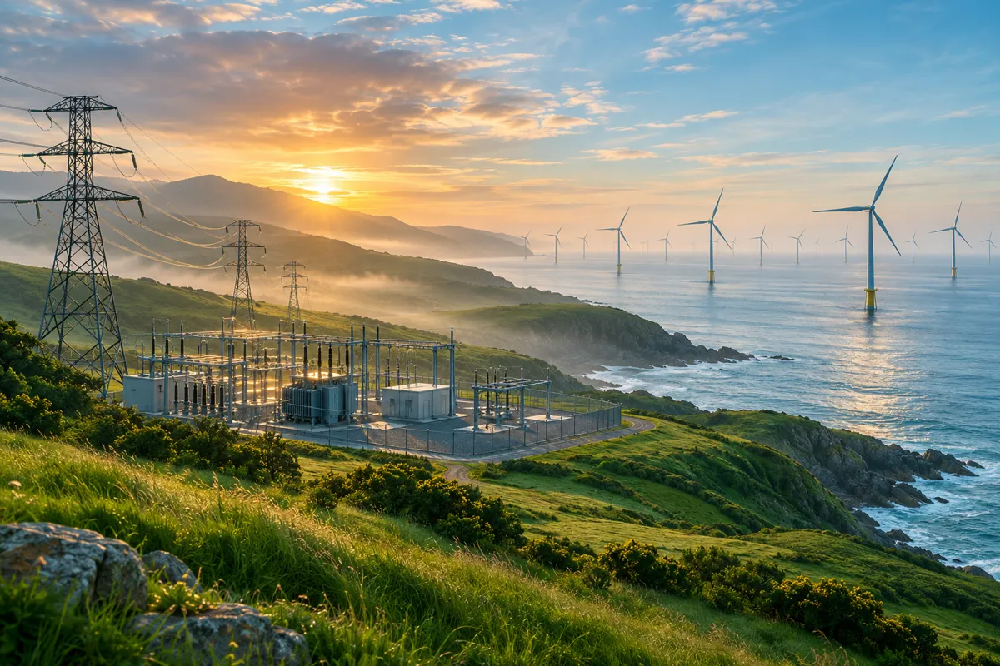

21-day implementation capstone
Recruiting & Onboarding in Energy
Guide a recruiting rollout through six SAP Activate phases. Work through the activities, produce the deliverables, and plan the handover to operations.

View source activity in Notion